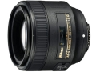

器材库 > 35mm画幅AF定焦镜头 > AF-S 85/1.8G

详细规格
镜头类型
中远摄/远摄镜头
发布日期
2012-01-06
厂家推荐价格
65,100.00 （日元）
焦距
85mm
等效35mm画幅焦距
DX:127.5mm
最大光圈
f/1.8
最小光圈
f/16
视角（对角）
DX:18.83° FX:28.5
镜头结构
9片/9组
光圈叶片
7片
最近对焦距离
80cm
最大放大倍率
0.124倍
驱动马达
SWM（宁静波动马达）
滤镜口径
67mm
镜头卡口
Nikon AF
防抖
否
颜色
黑色
尺寸
80×73mm
重量
350g
loveall2014-09-16 23:514.42 分
操作性 4.00耐用性 4.00性价比 4.50解像力 5.00色彩还原 5.00机械结构 4.00
血舞漫天2014-09-15 16:394.33 分
操作性 5.00耐用性 4.00性价比 4.50解像力 4.00色彩还原 4.50机械结构 4.00
danuel2014-09-09 21:484.83 分
操作性 5.00耐用性 4.50性价比 5.00解像力 5.00色彩还原 5.00机械结构 4.50
mzd19692014-07-20 22:434.83 分
操作性 5.00耐用性 4.50性价比 5.00解像力 5.00色彩还原 5.00机械结构 4.50
东井胡同阿乐2014-05-19 21:045 分
操作性 5.00耐用性 5.00性价比 5.00解像力 5.00色彩还原 5.00机械结构 5.00
鹏图2014-03-09 11:284.83 分
操作性 5.00耐用性 4.50性价比 5.00解像力 4.50色彩还原 5.00机械结构 5.00
16917092013-11-18 08:094.75 分
操作性 4.50耐用性 5.00性价比 5.00解像力 5.00色彩还原 5.00机械结构 4.00
新新小尼友2013-07-01 16:064.83 分
操作性 5.00耐用性 4.50性价比 5.00解像力 5.00色彩还原 5.00机械结构 4.50
ys10142013-06-16 22:134.92 分
操作性 5.00耐用性 5.00性价比 5.00解像力 5.00色彩还原 5.00机械结构 4.50
xiaott5002013-05-05 23:145 分
操作性 5.00耐用性 5.00性价比 5.00解像力 5.00色彩还原 5.00机械结构 5.00
sunmonk2012-12-17 19:075 分
操作性 5.00耐用性 5.00性价比 5.00解像力 5.00色彩还原 5.00机械结构 5.00
enzo12022012-10-24 21:554.92 分
操作性 5.00耐用性 4.50性价比 5.00解像力 5.00色彩还原 5.00机械结构 5.00
iceberg2012-09-18 00:214.75 分
操作性 4.50耐用性 4.50性价比 4.50解像力 5.00色彩还原 5.00机械结构 5.00
第一推动2012-08-22 13:184.42 分
操作性 4.50耐用性 4.00性价比 5.00解像力 4.50色彩还原 4.50机械结构 4.00
陈稳2012-07-12 11:004.75 分
操作性 5.00耐用性 5.00性价比 5.00解像力 4.50色彩还原 4.50机械结构 4.50
boyangvision2012-07-06 23:474.83 分
操作性 5.00耐用性 4.50性价比 5.00解像力 5.00色彩还原 5.00机械结构 4.50
迷路2012-06-12 23:284.83 分
操作性 5.00耐用性 5.00性价比 5.00解像力 5.00色彩还原 4.50机械结构 4.50
skoda2012-05-30 23:434.58 分
操作性 5.00耐用性 4.50性价比 4.50解像力 4.50色彩还原 4.50机械结构 4.50
Tanasfy2012-05-14 11:284.83 分
操作性 5.00耐用性 4.00性价比 5.00解像力 5.00色彩还原 5.00机械结构 5.00
幽o兰2012-03-31 11:054.42 分
操作性 4.50耐用性 4.00性价比 5.00解像力 4.50色彩还原 4.50机械结构 4.00
霞飞2012-02-28 17:174.5 分
操作性 4.00耐用性 4.00性价比 5.00解像力 5.00色彩还原 4.50机械结构 4.50
产品图 / 样片
评测 / 相关文章
- 中端人像头 尼康AF-S 85/1.8G试用 （存档）
- ［试用］尼康D600体验之泰国行 试拍与使用感受 （存档）
- ［资讯］尼康数码单反旗舰D4将延迟至3月发售 （存档）
- ［资讯］尼康旗舰D4真机图赏 （存档）
- ［资讯］尼康D4 （存档）
- ［资讯］尼康发布全新FX格式数码单反相机D4 （存档）
- ［资讯］轻巧便携 尼康AF-S 85/1.8G样片赏析 （存档）
相关文章
- ［试用］尼康D600体验之泰国行 试拍与使用感受 （存档）
- ［试用］中端人像头 尼康AF-S 85/1.8G试用 （存档）
- ［资讯］尼康数码单反旗舰D4将延迟至3月发售 （存档）
- ［资讯］尼康旗舰D4真机图赏 （存档）
- ［资讯］尼康AF-S 85/1.8G （存档）
- ［资讯］尼康D4 （存档）
- ［资讯］尼康发布全新FX格式数码单反相机D4 （存档）
- ［资讯］轻巧便携 尼康AF-S 85/1.8G样片赏析 （存档）
- ［试用］尼康85/1.8G F1.8俱乐部里的国王 （原站已下线）